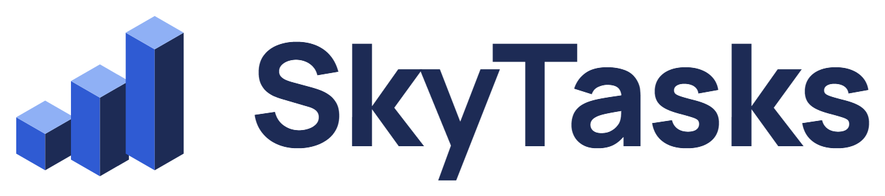

Your tasks, built into a city.
SkyTasks is a task manager for everyday life. Each area of your life (work, home, family, health, study, money) is a neighbourhood of a small city, and every task you finish makes it grow. One look at the city shows what is moving and what you have neglected.
Open SkyTasksAdd tasks in plain words
Type or say "dentist tomorrow at 10, buy milk" and SkyTasks splits it into tasks with the right day, time and neighbourhood.
Reminders on time
A reminder before each task, with Done, Snooze, Evening and Tomorrow right in the notification.
Plan the day and the week
A short morning plan, an evening wrap-up, repeating tasks, and a calendar tab with your day by the hour.
A city that grows
Finished tasks raise the buildings of each neighbourhood. Projects rise through real construction stages. At night, windows light up.
How SkyTasks uses Google Calendar
Google Calendar is optional and has two separate switches in the calendar tab. Each asks Google for permission only when you turn it on.
- Your tasks in Google Calendar (
calendar.app.created): SkyTasks creates one calendar named "SkyTasks" and keeps your tasks with a date and time there, so they appear next to everything else in Google Calendar. Moving or renaming one of those events updates the task. No other calendar is touched. - Your meetings in SkyTasks (
calendar.calendarlist.readonly,calendar.events.readonly): SkyTasks shows the meetings from the calendars you choose as busy time in its calendar tab, so you can plan tasks around them. Tapping a meeting starts a new task with its name and time. Read only: SkyTasks never changes your calendars, and meetings are never stored on our servers.
Details are in the privacy policy. SkyTasks' use of information received from Google APIs adheres to the Google API Services User Data Policy, including the Limited Use requirements.
SkyTasks בעברית
SkyTasks היא אפליקציה לניהול משימות, שבה החיים שלך הם עיר קטנה. כל תחום הוא שכונה, וכל משימה שסיימת מגדילה אותה. מכניסים משימות במשפט חופשי, מקבלים תזכורת בזמן, ורואים את היום והשבוע ביומן. החיבור ליומן גוגל הוא רשות: המשימות עם שעה נכנסות ליומן נפרד בשם SkyTasks, ואם תרצה, הפגישות שלך מוצגות באפליקציה לקריאה בלבד ולא נשמרות אצלנו. מדיניות הפרטיות.